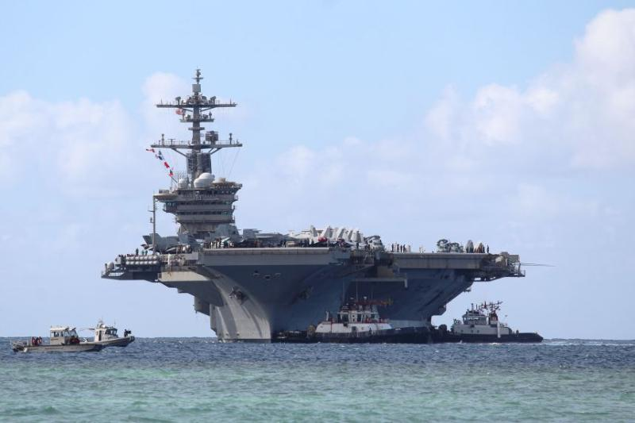

The Text Came Three Weeks Before He Hit the Water
The message arrived on July 21. "I think the boat is finally getting to me and I really don't think I can keep up my peace act anymore," the 19-year-old sailor wrote to his wife, according to texts obtained by MS NOW (The Daily Beast). He told her the deployment had already been extended past the July 15th date he'd been counting on. He said he didn't know if he could finish it. He went to his chain of command and the ship's medical team. His wife says they brushed him off. His contact lens prescription had expired; he was making mistakes at his station because he couldn't see; supervisors kept yelling at him for it. On August 3rd, he went into the water. He spent roughly an hour there before being rescued (Mediaite). His wife found out not from the Navy, but from one of his friends aboard the ship. The official notification came four days later.
That sailor isn't the only one. Annabelle Loma, whose husband has served 13 years, told Military Times he was prevented from jumping overboard — and now sits in medical hold, terrified a moment of burnout will cost him his career. "He's scared," she said. "Just because he was burnt out, his 13-year career is ruined, just like that" (Al Jazeera).
The Navy does not care. The mission will always come first.
Anonymous sailor aboard USS Abraham Lincoln, text obtained by MeidasTouchThe Ship Left San Diego in November. It Was Supposed to Be Home in May.
The USS Abraham Lincoln departed November 21st for what was scheduled as a Pacific deployment. It was rerouted to the Middle East as the Iran war began in February — part of the largest U.S. military buildup in the region since 2003 (Wikipedia). By August 13th, the ship had logged 250 consecutive days at sea and more than 200 days without a port call — both records (CBS News). The one port stop, in Oman in July, allowed sailors off the ship only into a secure compound. They saw fresh fruit for the first time in months. Anonymous texts shared with MeidasTouch describe meat arriving rotten, no milk for three months, and a meal that came down to half a cup of rice and two tortillas (Mediaite). Rep. Mike Levin, a California Democrat whose district includes many of the sailors' families, listed the conditions on the record: moldy showers, broken toilets, laundry down for weeks, no soap, no deodorant, no toothpaste (The Guardian).
At a San Diego town hall last week, roughly 200 family members confronted acting Navy Secretary Hung Cao. One spouse said her husband had texted her that morning that he hoped he wouldn't wake up. No return date was given. On Thursday, CNN reported the USS George Washington had been dispatched as a replacement — but when it would arrive, no one would say (Mediaite). The Navy's official position, offered in nearly identical language across every outlet that asked: the command has "not identified an increase in reported suicidal ideation or suicide attempts aboard the ship" (ABC News). Two U.S. officials confirmed to CBS News that a sailor did, in fact, go overboard in early August (CBS News). The circumstances are under investigation. The family was told four days later.
The George Washington Is Still Weeks Away — and the Navy Knows What Happens in the Meantime
The congressional delegation request will almost certainly force a Pentagon response within days, and that response will define what Hegseth owns.
Sen. Ruben Gallego, an Arizona Democrat and combat veteran, has called explicitly for a bipartisan congressional delegation to board the Lincoln — not just a letter, but boots on the ship (Deutsche Welle). Sen. Blumenthal set a formal deadline of August 27th for Hegseth and acting Navy Secretary Hung Cao to answer six specific questions, including what metrics the Navy uses to track fatigue and how the deployment fits any defined operational goal (The Guardian). These aren't rhetorical moves — a sitting member of the Armed Services Committee with a hard deadline and a colleague asking for physical access will almost certainly produce one of two things in the next 14 days: the Pentagon grants limited access and shapes what the delegation sees, or it refuses and Gallego turns the refusal into the story. Either outcome puts Hegseth on record. His "completely misrepresented" framing — offered from Panama while two U.S. officials were confirming the overboard incident to CBS News on the same day — has already collapsed once (CBS News). A second denial that contradicts documented conditions on the ship, under oath or in formal correspondence, becomes a different kind of liability.
That's the political timeline. The operational one is more immediate — and more consequential for the sailors.
The George Washington's arrival schedule will almost certainly determine whether more sailors end up in the water.
The Washington was in the Strait of Malacca on Thursday, transiting from the Pacific (The Independent). That's roughly 3,500 nautical miles from the Arabian Sea. At standard carrier transit speeds, the Lincoln's crew will most likely wait at least two to three more weeks before relief arrives — possibly longer depending on operational tempo and routing. That gap is the most dangerous window. The family members who spoke publicly did so because there was no date to hold onto; the sailor who went overboard on August 3rd had already been told on July 15th that the extension was happening again. The psychological mechanism isn't mysterious: it's the removal of a known endpoint that breaks people, not the length itself. The Navy's own unnamed official told ABC News that suicidal ideation typically runs higher at the start of a deployment and tapers — meaning the Lincoln, nine months in with no end date and a support structure its own medical team has reportedly been dismissing, is well outside any curve the Navy's baseline data was built to describe (ABC News).
All we want is a date home.
Anonymous sailor aboard USS Abraham Lincoln, quoted by Stars and StripesThe Lincoln's sailors don't need a hearing. They need a calendar. Until the Washington crosses into the Fifth Fleet area of operations and a handoff date is confirmed and communicated shipwide, the most likely outcome is more of the same — which, given what the same has already produced, is the number the Pentagon should be watching most carefully.
The Scenarios Almost Nobody Is Gaming Out Yet
If the congressional delegation actually boards the Lincoln, what they find could reframe the Iran war itself — not just Hegseth's tenure.
Sen. Gallego's request wasn't phrased as a welfare check. He called it an "oversight investigation," and the distinction matters (Deutsche Welle). Gallego is a former Marine who served in Iraq and Afghanistan. Blumenthal's six questions to Hegseth include one that has nothing to do with soap or milk: whether the deployment fits any defined operational goal (The Guardian). If a bipartisan delegation boards the Lincoln and the conditions match what families and sailors have described — the moldy showers, the burnout cases, the dismissals from the medical team — the story stops being about Hegseth's competence and starts being about the Iran war's underlying rationale. The Lincoln was rerouted from a Pacific deployment into a war zone with no announced objectives and no return date. That's not a logistics failure. That's a policy choice, and a shipboard delegation with subpoena power and cameras is one of the few mechanisms that can force that choice into the public record in a way that sticks. The window is narrow — once the George Washington arrives and the Lincoln heads home, the pressure valve releases. But if the delegation boards before the swap, it boards a ship still at war, still short of supplies, still without a date. That's a different kind of testimony than anything a letter can produce.
If the Lincoln's munitions and drone losses compound, the ship's condition stops being a morale story and becomes a readiness crisis with a price tag Congress can see.
This is the convergence that gets less attention than the human toll, but it's arguably more destabilizing. Scarborough noted on air that Hegseth's Pentagon has run low on munitions for an active war (Mediaite). The New Republic reported Thursday that the U.S. has lost at least 45 MQ-9 Reaper drones in the Iran conflict — each priced between $30 million and $50 million — representing roughly a quarter of the total stockpile (The New Republic). The Lincoln is operating in the same contested environment that's been chewing through those assets. If the ship — degraded, undermanned in effective readiness terms, crewed by exhausted sailors whose medical concerns were dismissed — makes an operational error in the Strait of Hormuz before the George Washington arrives, the accountability question shifts from "why didn't you tell families sooner" to "why was a compromised carrier the forward asset in the world's most contested waterway." That's not a scenario anyone in the Pentagon is currently putting in writing. It's exactly the kind of scenario that ends careers and opens investigations after the fact.
The one possibility no one is betting on — but that the families may have already set in motion.
The wives and spouses who went public did something that's genuinely unusual in military culture: they named names, spoke on record where they could, and framed the story not as complaint but as institutional failure. Annabelle Loma isn't anonymous. She told Military Times her husband's name, his career length, his fear about a dishonorable discharge (Al Jazeera). That kind of public accountability has occasionally forced military institutions to move faster than bureaucratic timelines allow — not because the institution wanted to, but because the cost of continued denial exceeded the cost of response. If a Republican senator from a state with a large Navy base reads the same town hall accounts and decides the political exposure runs both directions, the bipartisan pressure Gallego is already inviting could materialize faster than the Pentagon expects. That's a lower-probability scenario. But the families are already doing the work that makes it possible.
The Lies Section: What Pete Hegseth Said From Panama, and What It Was Designed to Do
"We Make Sure Every Ship Has Everything We Can Provide at Every Single Moment" — This Is the Sentence Doing the Most Work in the Whole Story
The claim is Hegseth's own, offered to reporters in Panama on August 13th while two U.S. officials were simultaneously confirming to CBS News that a sailor had gone overboard twelve days earlier (ABC News). The framing is careful — "everything we can provide" leaves the Pentagon an exit if pressed, since "can provide" in a contested combat zone is definitionally elastic. But the surrounding argument isn't careful at all. Hegseth told reporters the reporting had been "completely misrepresented" (Deutsche Welle). That's not a qualified denial. That's a categorical one — and it's false.
The Navy's own official, speaking to the BBC on the same day, acknowledged that "traditional supply hubs in the Middle East were disrupted by combat actions" and confirmed leadership had been rationing deliveries: "first food, then hygiene items, then mail" (BBC). That's an institutional admission that the ship was not receiving everything the Pentagon could provide — it was receiving a triage list. Hegseth's sentence and his own Navy's statement cannot both be true. One of them was issued from Panama for an audience of cameras. The other was issued by an official who had to explain conditions to a foreign news organization.
Who benefits from the misrepresentation isn't complicated. Hegseth is already carrying the weight of the Signal chat leak, the munitions shortfall, the firing of analysts on the war's opening day. A carrier full of sailors attempting to jump overboard is the kind of image — literal and political — that makes a defense secretary's position untenable. The "completely misrepresented" framing doesn't need to hold up under scrutiny. It needs to last 48 hours, scatter the initial news cycle, and give supporters something to repeat. It's the same mechanism Hegseth used in April, when the first food shortage reports surfaced and he called them "FAKE NEWS" (Washington Post). The ship is now four months further into its deployment and the conditions are worse. The denial is identical.
We make sure every ship, every crew, every captain has everything we can provide them at every single moment.
Pete Hegseth, Defense Secretary, to reporters in Panama, August 13, 2026The people most likely to believe this — and the people it's engineered for — are the ones who understand that war is hard and deployments are brutal and that complaints from families should be filtered through that lens. That instinct isn't wrong. The problem is that it's being weaponized to absorb a story that isn't about the hardship of war. It's about a 19-year-old sailor whose prescription expired, who told his chain of command he couldn't see well enough to do his job safely, who was yelled at for the mistakes that followed, who texted his wife he didn't think he could finish, and who ended up in the water (The Daily Beast). "Some deployments are longer than others" is a true sentence. It is not a response to that sailor. It is a way of not responding to him while appearing to.
The version of the lie with the longest legs isn't the categorical denial — that one collapses the moment a senator reads the Navy's own triage memo into the record. It's the ambient suggestion that the people raising alarms are soft, or politically motivated, or don't understand what service actually demands. That suggestion doesn't need to be stated. Hegseth's tone in Panama carried it. It's the same move — redirect attention to toughness, imply the critics lack it — that has let this administration absorb months of documented failure aboard the same ship without a single personnel consequence. The sailor in medical hold is terrified of a dishonorable discharge. The man who sent him to sea without soap isn't worried about anything at all.